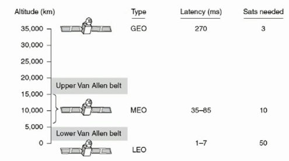

Communication Satellites
There are three main types of communication satellites:
- GEO = Geostationary Earth Orbit (they are called geostationary, because from the perspective of someone on Earth, they look stationary for 2 reasons: they are directly above the equator, and satellite.orbitSpeed = Earth.orbitSpeed)
- MEO = Middle Earth Orbit (they are not stationary. They just orbit the Earth at a lower orbit)
- LEO = Low Earth Orbit
The following diagram illustrates where each type of satellite sits in the Earth's atmosphere, and also includes some mysterious information about latency and satellites needed (we will go into this later...):

Figure 2.2a
Van Allen Radiation Belt
The areas labelled Upper Van Allen Belt and Lower Van Allen Belt in Figure 2.2a are parts of the Van Allen Radiation Belt
- It is a zone of energetic charged particles that originate from solar wind.
- The charged particles are captured by Earth's magnetic field and held in the Van Allen belt.
- Travelling through the Van Allen belt is very dangerous due to extreme levels of radiation. It is possible to plan a route that goes through less intense areas of the Van Allen Belt, which is what the moon landing missions did back in the 60's and 70's.
- Interestingly, the ISS passes through one of the most intense areas of the Van Allen Belt everyday (The South Atlantic Anomaly) and no dramatic side effects have been recorded.
- So whilst the phrase 'extreme levels of radiation' sounds scary, with the right protection (aluminium) and a good route it's not a big deal.
Latency
Latency is the time (in milliseconds) it takes for a signal to from sender -> receiver -> sender.
- For GEO, it takes 270ms, which is quite a lot! That's almost 3 whole seconds.
- Because of the high latency GEO satellites are not used for data communication.
- Instead, GEO satellites are used for weather and TV communication.
- For MEO, it takes 35-85ms, which is always under 1 second.
- MEO satellites are used for GPS.
- For LEO, it takes 1-7ms, which is very quick at less than 0.1 milliseconds.
- Because of the low latency, LEO satellites are used for data communication with the Internet, and mobile phones, and GPS
Number of satellites required at a particular atlitude
Finally, the diagram also mentioned the number of satellites required at that particular altitude:
- So for example, we need 3 GEO satellites at 35,000km
- We need 10 MEO satellites in the Upper Van Allen Belt
- And we need 50 LEO satellites in the Lower Van Allen Belt